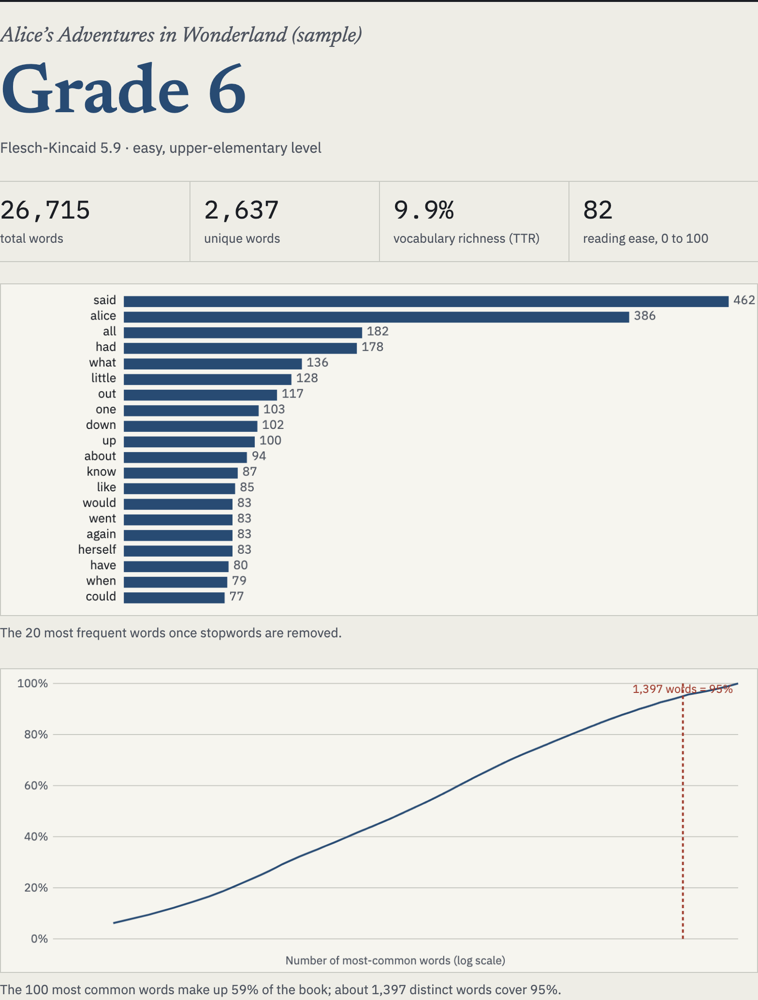
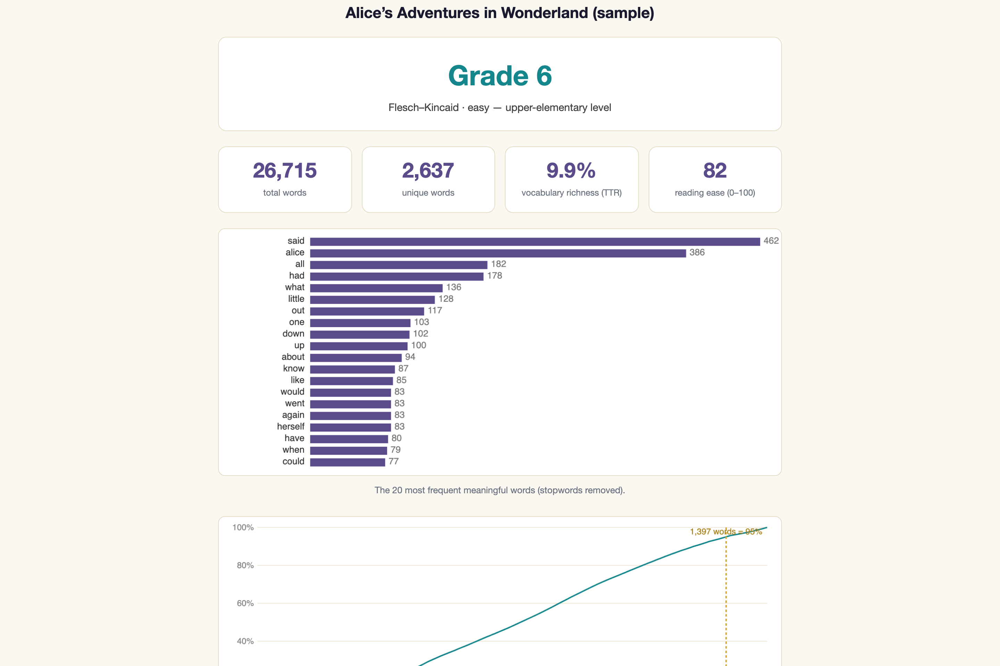
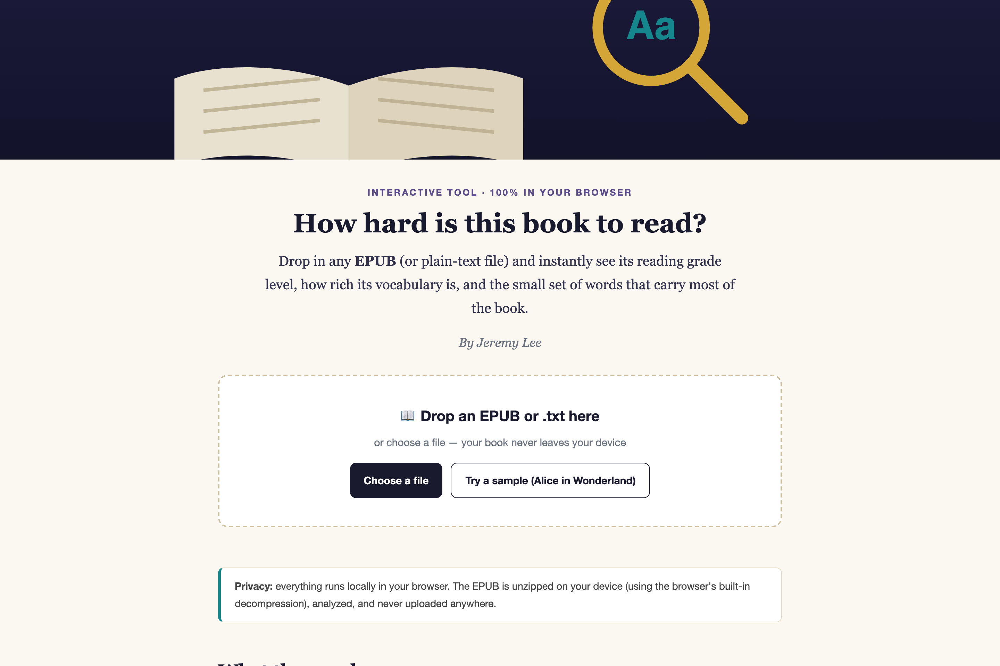
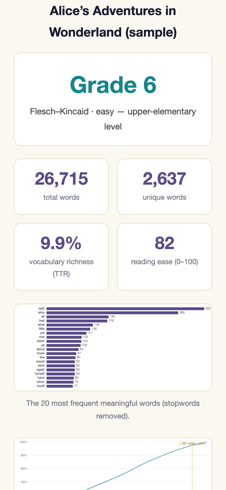

A browser tool for readers and language learners
Give it an EPUB or a text file and it reports a Flesch-Kincaid grade, a
reading-ease score, vocabulary richness, the most frequent words, and a
coverage curve: how many distinct words you need to know to follow most of
the book. The EPUB is unzipped by the browser's own
DecompressionStream, so the file never leaves your device.

How it works
Every EPUB is a ZIP archive of XHTML files. Reading one in a web page usually means bundling a JavaScript unzip library, and analyzing a book usually means sending it to a server. This tool does neither.
A short ZIP reader (about 30 lines) finds the central directory, then inflates
each chapter with
DecompressionStream('deflate-raw').
The browser's DOMParser extracts the text, and the scoring runs in
the same page. The code has no network call except the one that loads the
bundled sample, so the privacy claim can be checked by reading the source.
The coverage curve
A grade level squeezes a book into one figure and doesn't tell a learner what to do. The coverage curve answers a more useful question: how much vocabulary do I need before this stops being a slog?
For Alice the answer is 1,397 distinct words for 95%, and the top 100 words already carry 59% of the text. I measured the same steep-then-flat shape across a season of television in the Love Island lexical analysis. That study needed a Python pipeline. This tool puts the same measurement in a web page that works on any book.
said462 alice386 all182 had178 what136 little128 out117 one103 down102 up100 about94 know87 like85 would83 went83 again83 herself83 have80 when79 could77
The tool's top-20 list for the sample, in rank order, with counts. Produced by running the page's own analyze() function on sample-alice-in-wonderland.txt, 2026-10-26.

On a phone
The drop zone doubles as a file picker on touch devices, and the bundled sample lets someone try the tool in one tap without finding an EPUB first.


Limitations
Flesch-Kincaid uses sentence length and syllables per word, nothing else. It can't tell whether the ideas are hard or the vocabulary is archaic, so a book of short sentences about difficult things scores as easy. The syllable count is a vowel-group heuristic, and it miscounts some words.
Type-token ratio falls as texts get longer, so comparing it between a novella and a long novel is unfair, and the tool does not correct for length.
The coverage curve counts word forms, not word families: "run", "running" and "ran" are three words. That makes the counts higher than the word-family figures used in language-teaching research. Only English is handled; the tokenizer keeps the letters a to z.
Built on
DecompressionStreamDOMParser over the archive's XHTML files, in filename order<canvas> without a charting library.epub and plain text